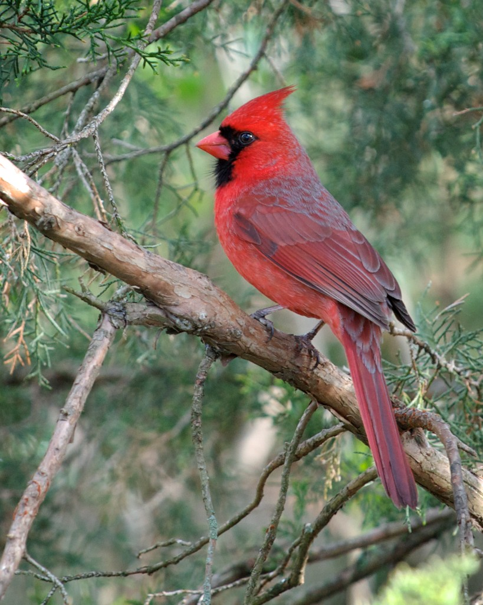

Cardenal

La paloma bravía (Columba livia), El cardenal norteño, también conocido como cardenal rojo. O simplemente cardenal, es una especie de ave paseriforme de la familia Cardinalidae que vive en Centro y Norteamérica.
- tiene un tamaño aproximado a unos 17 cm.
- Esta dotado de unas hermosas plumas rojas que parecen una cresta que van desde su garganta hasta la parte superior de su cabeza.
- El plumaje que está en su lomo es de un gris acero
- su pecho y el abdomen son blancos. Su pico es pequeño y algo blancuzco.
- Con un pico delgado y corto con ceras carnosas
- Agudeza visual, Lo que hace que pueden ver más que los ojos humanos
Regresar a la página de Inicio